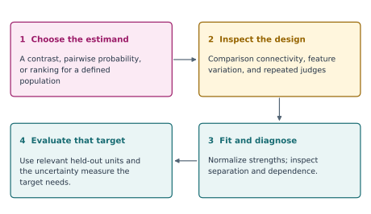
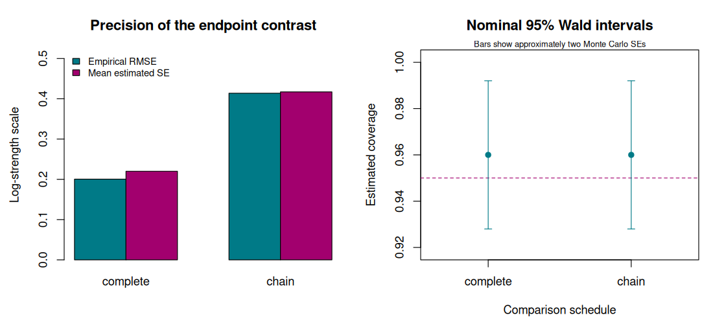

6. Pairwise preference learning#
Question. What can we learn when a person can compare two alternatives but cannot supply an absolute response?
A clinician may prefer one explanation to another, a reader may rank two retrieved passages, and a customer may choose between products. These observations are informative, but their meaning differs from a numerical measurement of quality. This chapter develops a statistical model for the comparisons, identifies its estimable quantities, and asks how the comparison schedule affects precision.
By the end, you should be able to derive a Bradley–Terry likelihood, diagnose two distinct failures of estimation, and connect preference learning to optimal experimental design.
From a comparison design to a target#


Fig. 3 A comparison workflow: choose an estimand, inspect graph and dependence, diagnose the fit, and evaluate that estimand. The checks distinguish identification, finite estimation, and precision.#
6.1 · Specify the observation and target#
There are \(K\) items. For a scheduled comparison of items \(i\) and \(j\), let \(Y=1\) mean that \(i\) is preferred. The basic model is
Possible targets are a strength contrast \(\theta_i-\theta_j\), a pairwise probability \(p_{ij}\), or an ordering of the strengths. A confidence interval for a contrast does not automatically provide a simultaneous confidence statement about the entire ranking.
The introductory analysis assumes a fixed comparison schedule, constant strengths, binary outcomes without ties, and conditionally independent comparisons. These are modelling choices to check. Repeated judges, shared prompts, order effects, or changing preferences can violate the simple sampling model; Chapter 7 addresses some of these complications.
6.2 · Derive the likelihood#
Suppose \(w_{ij}\) of \(n_{ij}\) independent comparisons favour item \(i\). Write \(x_{ij}=e_i-e_j\). Ignoring factors independent of the parameters, the log likelihood is
This is a binomial logistic regression with a structured design matrix. The score and negative Hessian are
Adding the same constant to all strengths leaves every probability unchanged. Impose \(\theta_K=0\) or \(\sum_i\theta_i=0\) before fitting. This normalization fixes an arbitrary origin; it does not create information that the experiment failed to collect.
Example 6.1 · A preference probability and its uncertainty
Setup. In an illustrative fixed comparison, alternative A wins 12 times and B wins 8 times.
Work it through. The estimated log-strength difference is \(\widehat\delta=\log(12/8)=0.405\). Its approximate standard error is \(\sqrt{1/12+1/8}=0.456\). A nominal 95% Wald interval is approximately \([-0.489,1.300]\). Transforming the endpoints with the logistic function gives approximately \([0.380,0.786]\) for the win probability.
What this shows. A point estimate of 0.60 does not establish a reliable preference for A. The interval concerns repeated independent comparisons under the model; it is neither a probability that A is objectively correct nor a simultaneous ranking guarantee.
6.3 · Identification is different from a finite estimate#
Construct an undirected comparison graph with an edge whenever \(n_{ij}>0\). If it is connected, all strength differences are identified in the model, subject to the common additive constant. If two components never meet, their relative location remains unidentified. No optimizer can recover an unsupported cross-component contrast from the likelihood alone.
Now construct a directed win graph, with an arrow from \(i\) to \(j\) when \(i\) has beaten \(j\). A finite, unique unpenalized maximum-likelihood estimate after normalization requires this graph to be strongly connected: every item can reach every other along directed wins. An undefeated group can cause separation even when the undirected comparison graph is connected.
For example, observing only A beating B and B beating C gives a connected schedule but supports arbitrarily increasing strength differences. Penalization or a proper prior can stabilize estimation, but the resulting answer depends on that additional assumption. Report it explicitly rather than treating a large finite optimizer output as a successful unpenalized fit.
6.4 · Why the comparison schedule matters#
The information matrix in Equation (6.2) is a weighted graph Laplacian. Each edge contributes information about one difference. For a contrast \(a^{\mathsf T}\theta\) with \(a^{\mathsf T}\mathbf 1=0\), a local large-sample variance approximation is \(a^{\mathsf T}I(\theta)^+a\), where \(I^+\) is the generalized inverse on the identifiable contrast space.
This gives a concrete design problem: allocate a fixed comparison budget over pairs to minimize variance for an important contrast, average variance over several contrasts, or another specified information criterion. Local information depends on the unknown strengths, so a locally optimal allocation uses nominal values or a pilot. A robust or sequential design must account for that uncertainty.
Example 6.2 · Equal budget, unequal precision
Setup. Three equally strong items have \(p_{ij}=1/2\). We have 60 comparisons and want \(\theta_1-\theta_3\).
Work it through. Allocating 20 comparisons to each of the three pairs gives edge information \(20/4=5\) and contrast variance \(2/(3\times5)=2/15\). Allocating 30 each to pairs \((1,2)\) and \((2,3)\) gives two edge informations of \(7.5\); the endpoint difference adds their variances, yielding \(1/7.5+1/7.5=4/15\).
What this shows. Both schedules identify the target, but the chain has twice the local variance. These numbers use the equal-strength model and a local information approximation. They do not prove that balanced comparisons are universally optimal for every target and parameter value.
Ask what a new comparison would repair#
Before allocating another comparison, identify the deficiency. A comparison connecting previously separate components can identify a previously unsupported contrast. Another comparison along an existing path can improve precision without changing identifiability. A newly observed reverse win can change separation behaviour, but its occurrence cannot be guaranteed by the schedule.
This distinction prevents treating all additional data as equivalent. For a target contrast, inspect which paths connect its two items and where information is weak. If a prior or penalty is required to obtain a finite estimate, describe that addition alongside the comparison evidence.
6.5 · Execute the comparison experiment#
The base-R lab compares complete, chain, and disconnected schedules. It reports design ranks, local precision for an endpoint contrast, and a fixed-design simulation. Only connected schedules enter the estimation comparison. Flagged fits are counted; coverage summaries use the usable fits and therefore must be read alongside those counts.
Change one element at a time: the total budget, strength separation, or graph. Before running, predict which contrast should become harder to estimate. The likelihood implementation uses glm.fit; the full R source is included so the comparison matrix and normalization remain visible.
Code
# Chapter 6: fixed comparison schedules and Bradley-Terry information.
# Base R only. Repeated runs with the same R version and seed reproduce the draws.
set.seed(2026102106)
options(width = 100)
K <- 6L
theta <- c(-0.9, -0.5, -0.1, 0.1, 0.5, 0.9)
all_pairs <- t(combn(seq_len(K), 2L))
chain_pairs <- cbind(seq_len(K - 1L), 2:K)
disconnected_pairs <- rbind(t(combn(1:3, 2)), t(combn(4:6, 2)))
comparison_matrix <- function(pairs) {
X <- matrix(0, nrow(pairs), K)
X[cbind(seq_len(nrow(pairs)), pairs[, 1])] <- 1
X[cbind(seq_len(nrow(pairs)), pairs[, 2])] <- -1
X
}
cat("Comparison-matrix ranks; a connected K-item design needs rank K-1:\n")
print(c(complete = qr(comparison_matrix(all_pairs))$rank,
chain = qr(comparison_matrix(chain_pairs))$rank,
disconnected = qr(comparison_matrix(disconnected_pairs))$rank))
budget <- 600L
a <- c(1, rep(0, K - 2L)) # theta_1 - theta_K after fixing theta_K=0.
local_se <- function(pairs) {
X <- comparison_matrix(pairs)[, -K, drop = FALSE]
n <- rep(budget / nrow(pairs), nrow(pairs))
p <- plogis(comparison_matrix(pairs) %*% theta)
information <- crossprod(X, X * as.vector(n * p * (1 - p)))
sqrt(drop(crossprod(a, solve(information, a))))
}
cat("\nLocal standard error for theta_1 - theta_6 at the generating strengths:\n")
print(round(c(complete = local_se(all_pairs), chain = local_se(chain_pairs)), 4))
run_design <- function(pairs, B = 150L) {
X <- comparison_matrix(pairs)[, -K, drop = FALSE]
n <- rep(as.integer(budget / nrow(pairs)), nrow(pairs))
p <- as.vector(plogis(comparison_matrix(pairs) %*% theta))
target <- theta[1] - theta[K]
estimates <- ses <- rep(NA_real_, B)
for (b in seq_len(B)) {
wins <- rbinom(length(n), n, p)
fit <- suppressWarnings(glm.fit(X, cbind(wins, n - wins),
family = binomial(), intercept = FALSE))
if (!fit$converged || any(!is.finite(fit$coefficients)) ||
any(abs(fit$coefficients) > 20)) next
phat <- fit$fitted.values
information <- crossprod(X, X * as.vector(n * phat * (1 - phat)))
inv <- tryCatch(solve(information), error = function(e) NULL)
if (is.null(inv)) next
estimates[b] <- fit$coefficients[1]
ses[b] <- sqrt(inv[1, 1])
}
ok <- is.finite(estimates) & is.finite(ses)
covered <- abs(estimates[ok] - target) <= qnorm(.975) * ses[ok]
c(usable = sum(ok), flagged = sum(!ok),
bias = mean(estimates[ok]) - target,
rmse = sqrt(mean((estimates[ok] - target)^2)),
mean_se = mean(ses[ok]), coverage = mean(covered),
coverage_mcse = sqrt(mean(covered) * (1 - mean(covered)) / sum(ok)))
}
results <- rbind(complete = run_design(all_pairs), chain = run_design(chain_pairs))
cat("\nFixed-design simulation; coverage is estimated, not guaranteed:\n")
print(round(results, 4))
cat("\nThe disconnected design is not fitted: the endpoint contrast is unidentified.\n")
cat("Flagged fits are disclosed; reported simulation summaries use the usable fits.\n")
# A connected comparison graph can still have a separated win pattern.
win_graph <- matrix(FALSE, 3, 3)
win_graph[1, 2] <- win_graph[2, 3] <- TRUE
reach <- win_graph
diag(reach) <- TRUE
for (k in 1:3) reach <- reach | outer(reach[, k], reach[k, ], "&")
cat("\nA beats B, B beats C: undirected graph connected, directed wins strongly connected?\n")
print(all(reach))
# Optional static figure; the course build supplies this directory.
figure_dir <- Sys.getenv("COURSE_FIGURE_DIR", "")
if (nzchar(figure_dir)) {
dir.create(figure_dir, recursive = TRUE, showWarnings = FALSE)
png(file.path(figure_dir, "06-pairwise-preferences.png"),
width = 1100, height = 500, res = 110)
par(mfrow = c(1, 2), mar = c(4.5, 4.5, 3.5, 1))
values <- t(results[, c("rmse", "mean_se")])
barplot(values, beside = TRUE, col = c("#007A87", "#A2006E"),
ylim = c(0, 1.25 * max(values)), ylab = "Log-strength scale",
main = "Precision of the endpoint contrast",
legend.text = c("Empirical RMSE", "Mean estimated SE"),
args.legend = list(x = "topleft", bty = "n", cex = .8))
coverage <- results[, "coverage"]
mcse <- results[, "coverage_mcse"]
limits <- range(c(.95, pmax(0, coverage - 2 * mcse), pmin(1, coverage + 2 * mcse)))
plot(1:2, coverage, ylim = limits + c(-.01, .01), xlim = c(.6, 2.4),
xaxt = "n", xlab = "Comparison schedule", ylab = "Estimated coverage",
pch = 19, col = "#007A87", main = "Nominal 95% Wald intervals")
axis(1, at = 1:2, labels = rownames(results))
abline(h = .95, lty = 2, col = "#A2006E")
arrows(1:2, pmax(0, coverage - 2 * mcse), 1:2, pmin(1, coverage + 2 * mcse),
angle = 90, code = 3, length = .05, col = "#007A87")
mtext("Bars show approximately two Monte Carlo SEs", side = 3, cex = .7)
invisible(dev.off())
}
Output
Comparison-matrix ranks; a connected K-item design needs rank K-1:
complete chain disconnected
5 5 4
Local standard error for theta_1 - theta_6 at the generating strengths:
complete chain
0.2185 0.4152
Fixed-design simulation; coverage is estimated, not guaranteed:
usable flagged bias rmse mean_se coverage coverage_mcse
complete 150 0 -0.0206 0.2004 0.2200 0.96 0.016
chain 150 0 -0.0025 0.4139 0.4171 0.96 0.016
The disconnected design is not fitted: the endpoint contrast is unidentified.
Flagged fits are disclosed; reported simulation summaries use the usable fits.
A beats B, B beats C: undirected graph connected, directed wins strongly connected?
[1] FALSE


6.6 · Exercises#
Show that replacing \(\theta\) by \(\theta+c\mathbf1\) leaves the likelihood unchanged. Explain why a disconnected graph introduces more than one arbitrary offset.
Derive the score and information matrix. Which term makes a nearly deterministic comparison less informative locally about a small change in its log odds?
Construct a connected comparison schedule with no finite unpenalized MLE. Explain what a ridge penalty changes and what it does not establish about the scientific target.
Modify the experiment to target \(\theta_2-\theta_3\). Compare the complete and chain designs at the same budget. Report estimation error, fit flags, and Monte Carlo uncertainty; do not choose seeds to obtain a preferred ranking.
Worked solutions
1. Every design row has entries summing to zero. Within a disconnected component, adding its own constant preserves all observed probabilities. Cross-component contrasts consequently change without changing the likelihood.
2. Differentiate \(w\eta-n\log(1+e^\eta)\) to obtain \(w-n\sigma(\eta)\) and curvature \(n\sigma(\eta)\{1-\sigma(\eta)\}\). The latter becomes small as a probability approaches zero or one. Nearly certain wins provide little local information per comparison about the underlying log-strength contrast.
3. A beats B in every observed comparison and B beats C in every observed comparison. The win graph has no return path. A positive quadratic penalty selects finite strengths and an origin if applied appropriately, but this is a penalized model, not new evidence about the unconstrained contrast.
4. Replace the contrast vector and extract the matching fitted coefficient difference and covariance expression. The answer depends on the graph location and generating strengths. A legitimate result can favour either design for a particular target; comparisons should keep budget and simulation protocol fixed.
Reading and transition#
Read Bradley and Terry (1952) for the original model and Turner and Firth (2012) for its GLM representation and R implementation. Yan (2014) discusses failure of the strong-connection condition. Next, allow comparisons to depend on context and on who supplied the preference.